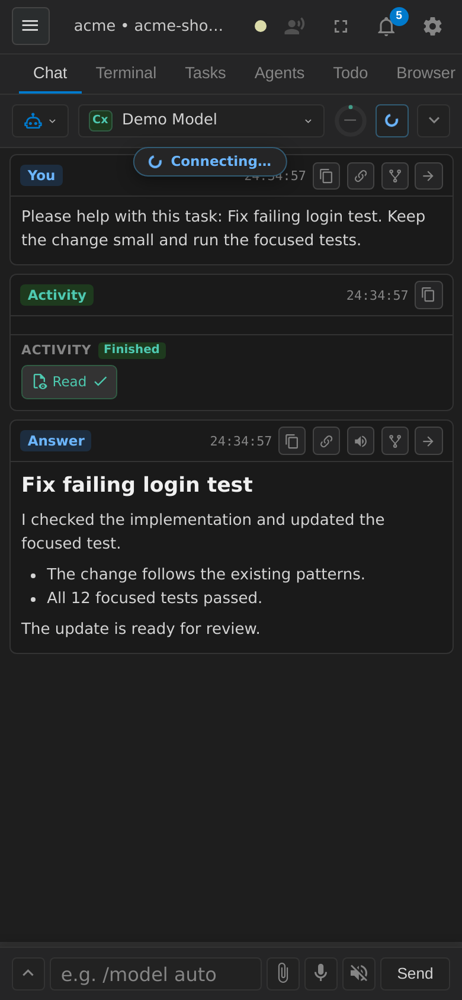
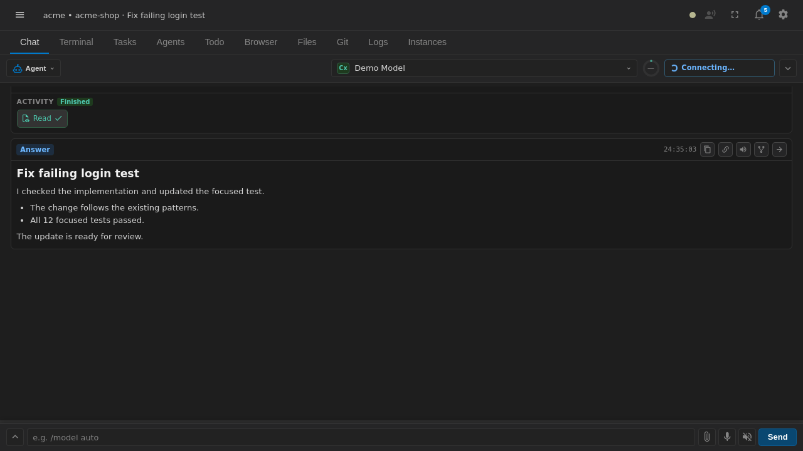

Mobile vibe coding
Steer agents, review diffs, and keep the live terminal close while you are away from your desk.
Cretli puts a live terminal, AI agent chat, and your own developer tools in a self-hosted PWA that you can reach from your phone.
A small, self-hosted control room for the work that normally keeps you at your desk.
Steer agents, review diffs, and keep the live terminal close while you are away from your desk.
Prompt, inspect tool calls, and manage shared sessions through one lightweight web UI.
Connect OpenCode, OpenRouter, Mistral, Cursor SDK, CodeBuddy, DeepSeek, Qwen, or Codex.
Your server, workspace, terminal, files, and git. No hosted workspace is required.
Inspect and drive a server-side Chromium session from the Browser panel when the runtime is available.
Use the same chat and terminal from multiple devices with updates broadcast in real time.
wsreg_* MCP tools without editing configuration files.integrate_next is now the preferred call for scoped batch integration.todo_integration action prepare builds the worktree result for integration.delegation_start records the allow_recheck override and shows it in delegation rows.



git clone https://github.com/cretli/cretli.git
cd cretli
npm ci
npm run build:front:prod
npm startexport CRETLI_SETUP_TOKEN="$(openssl rand -hex 16)"
docker compose up --buildOpen https://localhost:3011 and follow first-run setup. See Docker details and security basics.